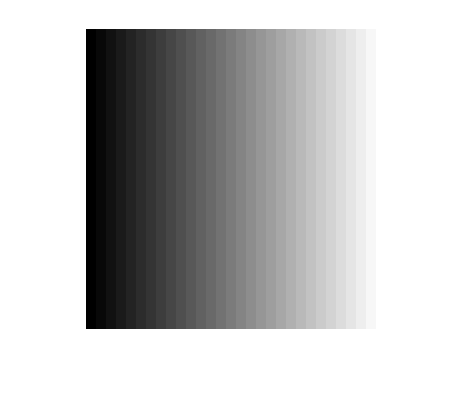
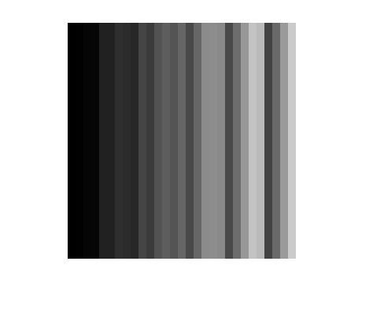

A demo of a bug in bilateral3()
Demonstrates two separate issues
Contents
The test image - a simple gradient
im1 = repmat(uint8(1:30),[30 1 30]); % visualize it: imshow(im1(:,:,1),[],'InitialMagnification',1000);
Apply smoothing
using extremely small spatial sigma (degenerate, zero-smoothing case) causes issues:
sigmaSxy = 0.1; sigmaSz = 0.1; sigmaR = 1; samS = 5; samR = 5; verbose = false; im2 = bilateral3(im1, sigmaSxy,sigmaSz,sigmaR,samS,samR,verbose);
Issue1: scaled colors
Although `im1` values are in [1, 30], `im2` values are scaled to [0, 255].
assert(abs(max(im2(:))-255)<1e-10); disp('max(im2(:)) :') disp(max(im2(:))); disp('min(im2(:)) :') disp(min(im2(:)));
max(im2(:)) :
255.0000
min(im2(:)) :
8.7931
Issue2: The result is non-monotonous:
It is natural to expect that smoothed version of a monothonous gradient would be monothonous in any case, but the result we have is not monothonous:
% visualize it: imshow(im2(:,:,1),[],'InitialMagnification',1000);
Testing the one-line quick-and-dirty fix for issue2:
(see details inside "bilateral3_fixed.m")
im3 = bilateral3_fixed(im1, sigmaSxy,sigmaSz,sigmaR,samS,samR,verbose); % visualize it: imshow(im3(:,:,1),[],'InitialMagnification',1000);